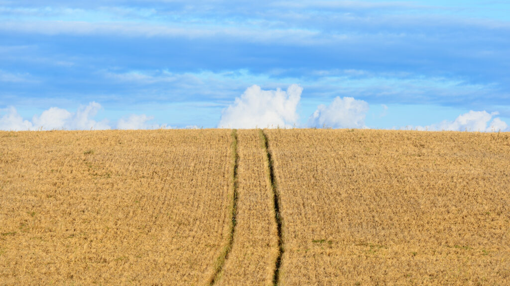
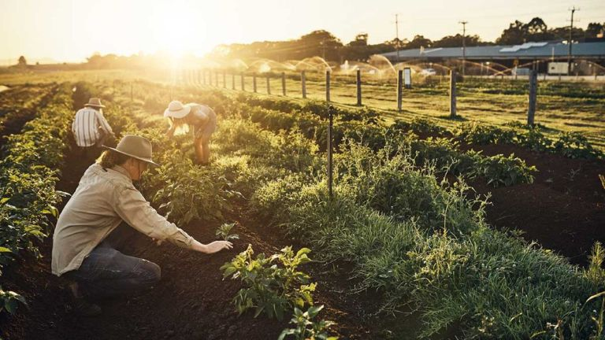

¿Por qué utilizar Trazagrico?

Trazabilidad Transparente
Conoce la historia detrás de cada producto que compras. Nuestra plataforma te permite rastrear el origen de los alimentos, garantizando su calidad y seguridad.

Comunidad Sostenible
Al elegir Trazagrico, estás contribuyendo a un sistema agrícola más sostenible. Fomentamos prácticas responsables.

Mayor conexión con Productores
Puedes acceder a una amplia variedad de productos agrícolas de muchos productores.